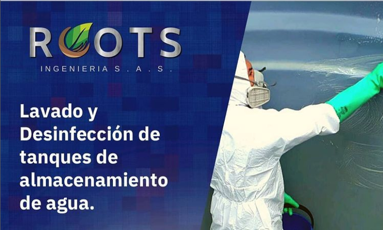

Servicios
Estos son algunos de los servicios que en roots ingenierrias S.A.S ofrecemos
- Recolección y transporte de residuos orgánicos, especiales (peligrosos) y convencionales.
- Estudios de impacto ambiental
- Disposición final y/o aprovechamiento de residuos.
- Limpieza y mantenimiento de pozos sépticos.
- Lavado y desinfección de tanques de agua potable y agua residual
- Succión, tratamiento, transporte y disposición de aguas y lodos
- Diseño, construcción y mantenimiento de plantas de tratamiento de agua residual
- Trampas retenedoras de grasas
- Tanque de almacenamiento
- Tramite de permisos
- Asesoría Forestal
- Diseño y mantenimiento de jardines y zonas verdes